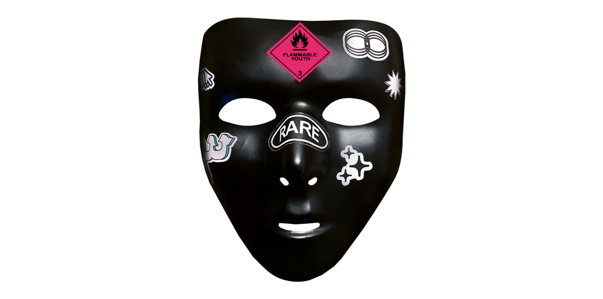

Zerosik (ZK) is an experimental atelier and independent lifestyle brand based in Tunisia. Founded in 2022, ZK uses visuals, screen printing, and other creative mediums to connect with people who come from places with limited resources and outlets for expression. ZK’s ethos is “by us, for us” and as such, we collaborate with creatives from North Africa, the Arab World, and their Diasporas.
The name “Zerosik” came to the founders back in 2018 when they wanted to express the hidden files in our subconscious that archive political, critical, and satirical thoughts. The mind is a nexus of socially relevant criticisms and commentary that are rarely ever vocalized. Fichier Caché wants to articulate those ideas in a playful manner on printed designs and wearable pieces.
As a commitment to support our local economy, each one of ZK’s creations is made in Tunisia. All of ZK's collections come in limited editions.